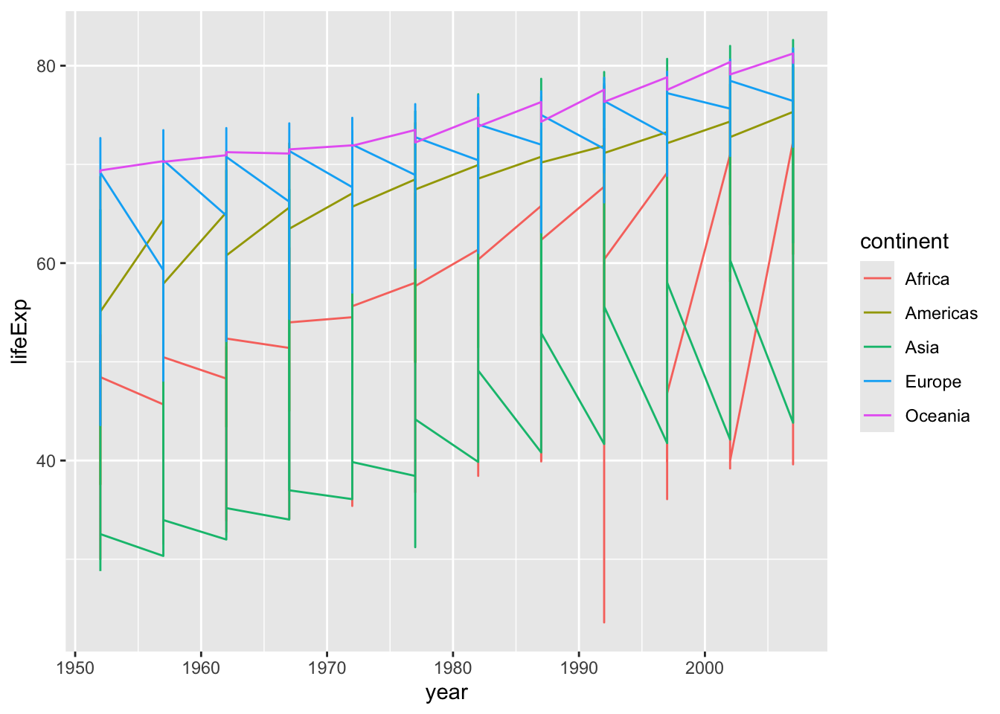
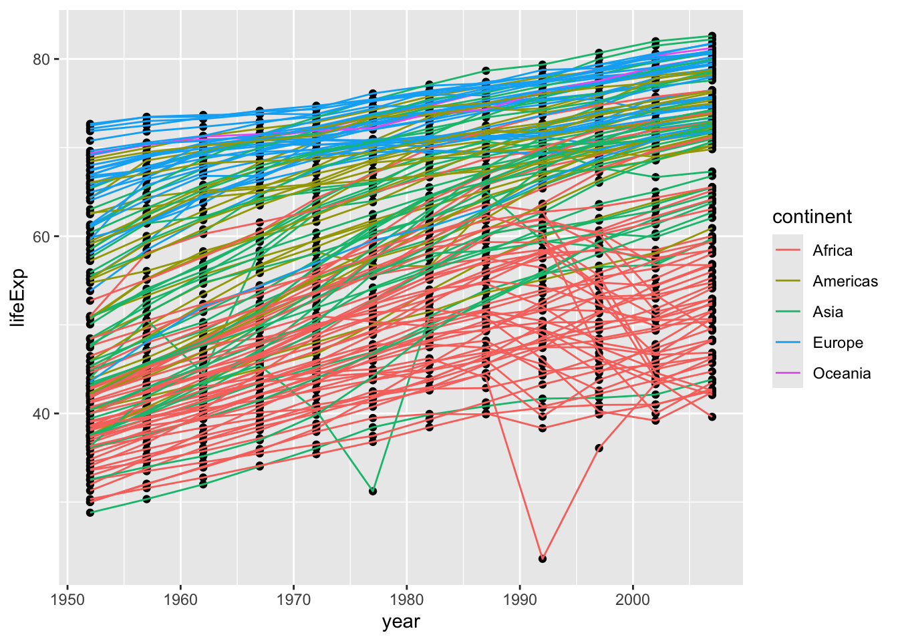
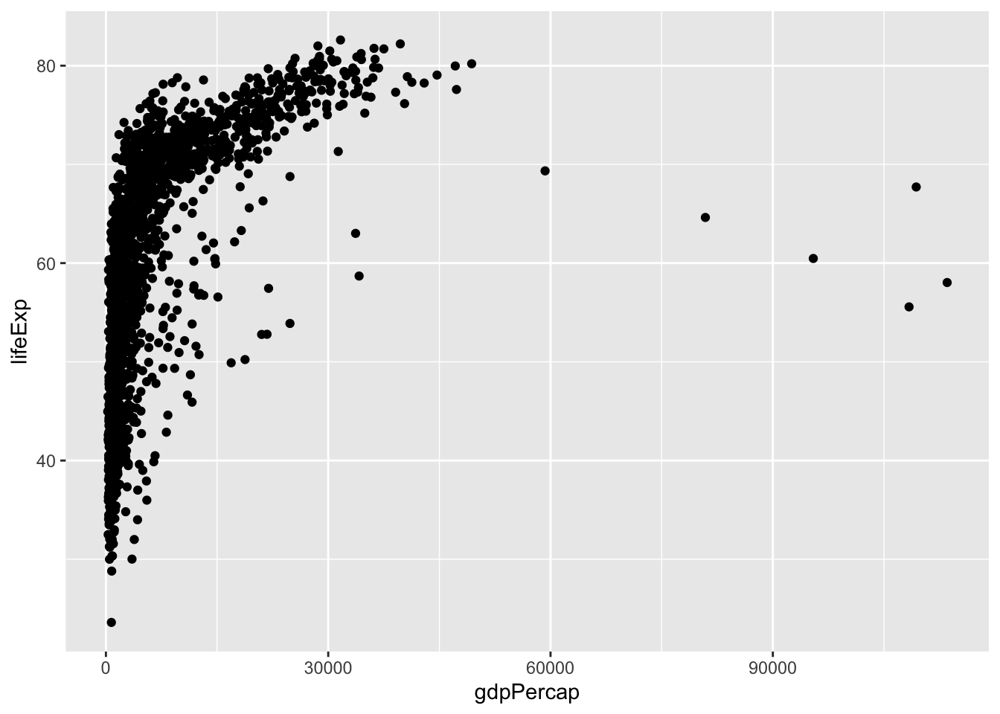
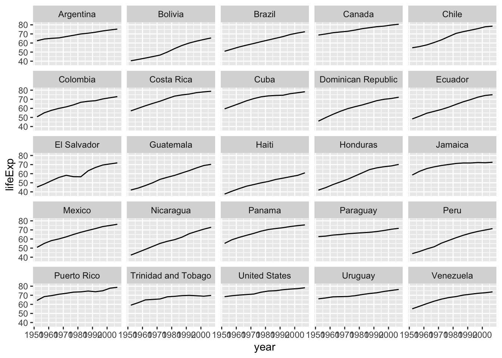

Creating publication quality graphics with ggplot2
Author
Software Carpentry / Jessica Cooperstone
Published
February 11, 2025
In this episode, we will learn about how to create publication-quality graphics in R using the tidyverse package ggplot2. Plotting data is a very quick and easy way to understand the relationship between your variables.
1 The grammar of graphics
The package ggplot2 applies a framework for plotting such that any plot can be built from the same basic building blocks. This very popular package is based on a system called the Grammar of Graphics by Leland Wilkinson which aims to create a grammatical rules for the development of graphics. It is part of a larger group of packages called “the tidyverse.”
The “gg” in ggplot stands for “grammar of graphics” and all plots share a common template. This is fundamentally different than plotting using a program like Excel, where you first pick your plot type, and then you add your data. With ggplot, you start with data, add a coordinate system, and then add “geoms,” which indicate what type of plot you want. A cool thing about ggplot is that you can add and layer different geoms together, to create a fully customized plot that is exactly what you want. If this sounds nebulous right now, that’s okay, we are going to talk more about this.
Simplified, we will provide to R:
our data
aesthetics mapped to variables - what connects the data to the graphics
layers - determine which type of plot we are going to make, what cordinate system we will use, what scales we want, and other important aspects of our plot
You can think about a ggplot as being composed of layers. You start with your data, and continue to add layers until you get the plot that you want. This might sound a bit abstract so I am going to talk through this with an example.
2 Looking at our data and getting set up
Before we plot, let’s look at the data we will use for this session. We are going to use the same gapminder data from one hour ago.
In case you don’t have it up from before, let’s load both the tidyverse and gapminder using the function library() so they are active.
library(tidyverse)
── Attaching core tidyverse packages ──────────────────────── tidyverse 2.0.0 ──
✔ dplyr 1.1.4 ✔ readr 2.1.5
✔ forcats 1.0.0 ✔ stringr 1.5.1
✔ ggplot2 3.5.1 ✔ tibble 3.2.1
✔ lubridate 1.9.4 ✔ tidyr 1.3.1
✔ purrr 1.0.2
── Conflicts ────────────────────────────────────────── tidyverse_conflicts() ──
✖ dplyr::filter() masks stats::filter()
✖ dplyr::lag() masks stats::lag()
ℹ Use the conflicted package (<http://conflicted.r-lib.org/>) to force all conflicts to become errors
library(gapminder)
We can use the function View() to look at our data. This opens our data sort of like how we might view it in Excel.
View(gapminder)
We can also use the function str() or glimpse() to look at the structure of our data.
gapminder is a tibble (very similar to a data frame), comprised of 1,704 rows and 6 columns. The columns are:
country (a factor)
continent (a factor)
year (an integer)
lifeExp (a number)
pop (an integer)
We are going to use the function ggplot() when we want to make a ggplot.
The function vs the package
Note, the function is called ggplot() and the package is called ggplot2.
If we want to learn how the function works, we can use the ? to find out more. Running the code below will open up the documentation page for the function ggplot() in the bottom right “Help” quadrant of RStudio.
?ggplot()
3 Building our plot
We can start by providing the data as the first argument to ggplot().
ggplot(data = gapminder)
We have a blank plot! We haven’t given enough information for R to know what we want to plot - we have simply told R what dataframe we will be using. We are getting the first “base” layer of the plot.
Instead of providing the dataframe as the first argument to ggplot(), we can use the pipe |> (or the old pipe %>% that you might see around, which works in the exact same way) that Jelmer taught us about. This “sends” the data into the next function. I will use this syntax for the rest of the workshop.
gapminder |>ggplot()
Note
ggplot(data = gapminder) and gapminder |> ggplot() are the same thing.
If we want to make a scatterplot to understand the relationship between GDP per capita (i.e., gdpPercap) and life expectancy (i.e., lifeExp), we can do so by setting x and y respectively within aes(), or our aesthetic mappings.
gapminder |>ggplot(mapping =aes(x = gdpPercap, y = lifeExp))
Ok! We don’t have a plot, per se, but we have more than we had before. We can now see that gdpPercap is on the x-axis (along with some numbers reflecting the range of our data), and lifeExp is on the y-axis (along with some numbers reflecting the range of our data).
Note
Note that the “mapping” part is actually not necessary.
gapminder |>ggplot(aes(x = gdpPercap, y = lifeExp))
Now we need to tell R what geometry, or “geom” want to use. All of the “geoms” start with geom_*(), and we can see what they all are by starting to type geom and pressing tab.
Let’s make a scatterplot here.
gapminder |>ggplot(aes(x = gdpPercap, y = lifeExp)) +geom_point()
3.1 Challenge 1
Modify the plot we’ve made so that you can see the relationship between life expectancy and year.
Click for the solution
Map x = year and y = lifeExp, and use geom_point() since we want a scatterplot.
gapminder |>ggplot(aes(x = year, y = lifeExp)) +geom_point()
Note the plot looks a little weird since each point is a country, so for every year, we have an average life expectancy for each country.
3.2 Challenge 2
Modify to color your points by continent.
Need a hint?
Try using the argument color within your aesthetic mappings.
Need another hint?
Try setting color = continent within your aesthetic mappings.
Click for the solution
gapminder |>ggplot(aes(x = year, y = lifeExp, color = continent)) +geom_point()
You can better see here that each point is actually a different country now that they are colored by continent.
4 Adding more layers
Instead of making a scatter plot, we might want to make a line plot. Using ggplot this is as easy as changing out your geom.
gapminder |>ggplot(aes(x = year, y = lifeExp, color = continent)) +geom_line()
The plot is jumping around a lot since for each year, we have life expectancy data for each country. Our plot here is not a summary of that data, but instead all of that data together, on top of itself.
We might want to have one line for each country, we can do this by specifying group = country within our aesthetic mappings.
gapminder |>ggplot(aes(x = year, y = lifeExp, color = continent, group = country)) +geom_line()

A nice thing about ggplot is that you don’t actually need to decide if you want to have lines or points, you can have both!
gapminder |>ggplot(aes(x = year, y = lifeExp, color = continent, group = country)) +geom_line() +geom_point()
Now we see a point for each observation and each point and line is colored based on continent.
You can also set your mappings globally (within ggplot()) or locally (within a specific geom). Let’s see what the difference is. Let’s see what happens when we move color = continent into geom_point(aes(color = continent)).
gapminder |>ggplot(aes(x = year, y = lifeExp, group = country)) +geom_point(aes(color = continent)) +geom_line()
We can see that now only the points are colored by continent, and the lines are all black (the default color for one group).
4.1 Challenge 3
Change the order of the point and line layers - what happens?
Click for the solution
Points then lines (points are on the bottom)
gapminder |>ggplot(aes(x = year, y = lifeExp, group = country)) +geom_point() +geom_line(aes(color = continent))
Lines then points (lines are on the bottom)
gapminder |>ggplot(aes(x = year, y = lifeExp, group = country)) +geom_line(aes(color = continent)) +geom_point()

Note
The layers are added in the order you indicate, so if you change the order, your plot will change. You can see because geom_line() comes below geom_point(), the lines are placed on top of the points.
5 Transformations and statistics
Sometimes we might want to apply some kind of transformation to our data while plotting so we can better see relationships between our variables.
Let’s start with a base plot to see the relationship between GDP per capita (gdpPercap) and life expectancy (lifeExp).
gapminder |>ggplot(aes(x = gdpPercap, y = lifeExp)) +geom_point()
The presence of some outliers for gdpPercap make it hard to see this relationship. We can try log base 10 transforming the x-axis to see if this helps using a scale_*() function.
gapminder |>ggplot(aes(x = gdpPercap, y = lifeExp)) +geom_point() +scale_x_log10() # log 10 scales the x axis

I can also make our points a little bit transparent to ease our overplotting problem (where too many point are on top of each other, making each point hard to see) by setting alpha =. Alpha ranges from 0 (totally transparent) to 1 (totally opaque). Note that I alpha = 0.5outside the aes() function - we are not mapping alpha to some variable, we are simply setting what alpha should be.
gapminder |>ggplot(aes(x = gdpPercap, y = lifeExp)) +geom_point(alpha =0.5) +# not inside aesscale_x_log10() # log10 transform the x-axis
Now we can better see the parts of the plot that are very dark are where there are a lot of data points.
We can also add a smoothed line of fit to our data by setting method = "lm" within geom_smooth() to fit a linear model.
gapminder |>ggplot(aes(x = gdpPercap, y = lifeExp)) +geom_point(alpha =0.5) +# not inside the aesscale_x_log10() +geom_smooth(method ="lm") # smooth with a linear model ie "lm"
`geom_smooth()` using formula = 'y ~ x'
We can adjust the thickness of the line by setting linewidth within geom_smooth(), and turn off the confidence interval by setting se = FALSE.
gapminder |>ggplot(aes(x = gdpPercap, y = lifeExp)) +geom_point(alpha =0.5) +# not inside the aesscale_x_log10() +geom_smooth(method ="lm", # smooth with a linear model ie "lm"linewidth =3, # increase thickness of the linese =FALSE) # turn off plotting of a confident internal
`geom_smooth()` using formula = 'y ~ x'
5.1 Challenge 4A
Modify the color and the size of the points in the previous example. You’ll also probably want to make the linewidth less ridiculous.
Need a hint?
Don’t put color and size inside aes().
Want another hint?
The equivalent of linewidth for points is size.
Click for the solution
gapminder |>ggplot(aes(x = gdpPercap, y = lifeExp)) +geom_point(alpha =0.5, color ="purple", size =0.5) +# outside the aesscale_x_log10() +geom_smooth(method ="lm", linewidth =1)
`geom_smooth()` using formula = 'y ~ x'
5.2 Challenge 4B
Modify the plot from 4A so points are a different shape and colored by continent with new trendlines
Need a hint?
Don’t put color and size inside aes().
Want another hint?
The equivalent of linewidth for points is size.
Click for the solution
All points are now triangles. You can find info on the shape codes here.
gapminder |>ggplot(aes(x = gdpPercap, y = lifeExp, color = continent)) +geom_point(shape =17, # 17 is a closed trianglealpha =0.5) +scale_x_log10() +geom_smooth(method ="lm", linewidth =1) # smooth with a linear model ie "lm"
`geom_smooth()` using formula = 'y ~ x'
All points are now open triangles, we are setting continent to fill and making the outline black. Note that only shapes 21-25 can accept both a color (outside) and fill (inside). Otherwise, they only accept color.
gapminder |>ggplot(aes(x = gdpPercap, y = lifeExp, fill = continent)) +geom_point(shape =24, # open trianglealpha =0.5, color ="black") +# color controls outside, fill controls insidescale_x_log10() +geom_smooth(method ="lm", linewidth =1) # smooth with a linear model ie "lm"
`geom_smooth()` using formula = 'y ~ x'
Mapping shape to continent
gapminder |>ggplot(aes(x = gdpPercap, y = lifeExp, color = continent)) +geom_point(aes(shape = continent), alpha =0.5) +scale_x_log10() +geom_smooth(method ="lm", linewidth =1) # smooth with a linear model ie "lm"
`geom_smooth()` using formula = 'y ~ x'
6 Multi-panel figures
Small multiples are a useful way to look at data across the same scale to understand patterns.
Let’s say we want to understand how life expectancy changes over time throughout the Americas? Instead of making an individual plot for each country, we can use facet_wrap() to have ggplot make our plots all at once.
First let’s use what Jelmer taught us to filter for only the observations from the Americas.
Then, this new data frame gapminder_americas can be the data for our next plot. Let’s look first without faceting.
gapminder_americas |>ggplot(aes(x = year, y = lifeExp, group = country)) +geom_line()
Faceting allows us to better see each country on its own.
gapminder_americas |>ggplot(aes(x = year, y = lifeExp)) +geom_line() +facet_wrap(vars(country)) # make facets by country
7 Modifying text
The plots we’ve made so far could really benefit from some better labels. We can set what we want or plot labels to be as arguments in labs().
gapminder_americas |>ggplot(aes(x = year, y = lifeExp)) +geom_line() +facet_wrap(vars(country)) +# make facets by countrylabs(x ="Year", # x axis titley ="Life expectancy", # y axis titletitle ="Figure 1. Life expectancy in the Americas from 1952-2007", # main title of figure )

8 Adjusting theming
We can also modify the non-data elements on our plot by controlling the theming. We can do this in two general ways:
by selecting a pre-set (or “complete”) theme, functions start with theme_*()
by modifying individual settings using the function theme()
We will start with the pre-set themes by adding this function to the end of our ggplot code.
gapminder_americas |>ggplot(aes(x = year, y = lifeExp)) +geom_line() +facet_wrap(vars(country)) +# make facets by countrytheme(axis.text.x =element_text(angle =45)) +# years on the x on a 45 deg anglelabs(x ="Year", # x axis titley ="Life expectancy", # y axis titletitle ="Figure 1. Life expectancy in the Americas from 1952-2007", # main title of figure ) +theme_bw() # change to a black and white theme
If we wanted to change the fonts, change the color the strip text (i.e., the text in the rectangle behind the names of the countries), the strip text background (i.e., the rectangle behind the names of the countries), adjust the x-axis year labels to be on an angle so they’re not so squished, we can do all that.
gapminder_americas |>ggplot(aes(x = year, y = lifeExp)) +geom_line() +facet_wrap(vars(country)) +# make facets by countrytheme(axis.text.x =element_text(angle =45)) +# years on the x on a 45 deg anglelabs(x ="Year", # x axis titley ="Life expectancy", # y axis titletitle ="Figure 1. Life expectancy in the Americas from 1952-2007", # main title of figure ) +theme_bw() +# change to a black and white themetheme(text =element_text(family ="AppleGothic"), # change all fontsstrip.background =element_rect(color ="red", fill ="black"), # strip text outline red, fill blackstrip.text =element_text(color ="white"), # strip text whiteaxis.text.x =element_text(angle =45, # years on the x on a 45 deg anglevjust =0.7)) # scoot year numbers down a lil
Note
Remember that your code is run from top to bottom, so if code lower down over-writes something that came above, the lower code will prevail.
9 Exporting a plot
Often we want to take our plot we have made using R and save it for use someplace else. You can export using the Export button in the Plots pane (bottom right) but you are limited on the parameters for the resulting figure.
We can do this with more control using the function ggsave().
First we will save our plot as an object using the assignment operator <-, here as life_exp_americas_plot.
life_exp_americas_plot <- gapminder_americas |>ggplot(aes(x = year, y = lifeExp)) +geom_line() +facet_wrap(vars(country)) +# make facets by countrytheme(axis.text.x =element_text(angle =45)) +# years on the x on a 45 deg anglelabs(x ="Year", # x axis titley ="Life expectancy", # y axis titletitle ="Figure 1. Life expectancy in the Americas from 1952-2007", # main title of figure ) +theme_bw() +# change to a black and white themetheme(text =element_text(family ="AppleGothic"), # change all fontsstrip.background =element_rect(color ="red", fill ="black"), # strip text outline red, fill blackstrip.text =element_text(color ="white"), # strip text whiteaxis.text.x =element_text(angle =45, # years on the x on a 45 deg anglevjust =0.7)) # scoot year numbers down a lil
Then we can save it. I am indicating here to save the plot in a folder called results in my working directory, as a file called lifeExp.png. If you want your file to go within a folder, you have to first create that folder.
ggsave(filename ="results/lifeExp.png", # file path and nameplot = life_exp_americas_plot, # what to savewidth =18, height =12, dpi =300, # dots per inch, ie resolutionunits ="cm") # units for width and height
Note
To learn more about the arguments in ggsave() you can always run ?ggsave().
9.1 Challenge 5
Create some box plots that compare life expectancy between the continents over the time period provided. Try and make your plot look nice, add labels and adjust the theme!
Need a hint?
The geom for making a boxplot is geom_boxplot().
Want another hint?
Set labels within labs(). Adjust theming with theme(). Check out the complete themes.
Click for the solution
gapminder |>ggplot(aes(x = continent, y = lifeExp, fill = continent)) +geom_boxplot() +facet_wrap(vars(year)) +theme_classic() +# my favorite complete theme theme(axis.title.x =element_blank(), # remove x-axis titleaxis.text.x =element_blank(), # remove x-axis labelsaxis.ticks.x =element_blank()) +# remove x-axis tickslabs(y ="Life Expectancy (years)",fill ="Continent") # change the label on top of the legend